Years ago, when I used to think programming was nothing but ‘typing numbers on a blackscreen’, I came across this interesting article by Rapheal Burki who used Spotify’s API to find the most brutal Cannibal Corpse song by analysing various audio features such as ‘valence’ and ‘loudness’. As a metalhead, I always wanted to do something similar for my own playlists.
Last year, I started noodling around with Spotify’s API and was able to get a list of my top 50 songs along with their audio features. I became really fascinated with these audio features and I knew that there was a data science project somewhere in there. One idea I had was getting a list of different metal songs from various playlists along with their audio features and then find tracks with similar audio features that I would be interested in by using a k-Means Clustering algorithm.
Somehow it fell off, and I decided to get back on this project a couple of weeks ago. Unfortunately, in November 2024, Spotify made some changes to their Web API and they deprecated some of the functionalities such as retrieving the audio features of different tracks.
Herein lies an important life lesson - there is a ‘Goldilocks Zone’ of doing things where you have a narrow window of opportunity to get something done. If you miss that opportunity, you may never find it again.
That was until I found out about Last.Fm and Genius.
Last.Fm is a website that allows users to create a history of what they listened to, share and compare profiles with other users, and recommend playlists based on those profiles. So think of Facebook meeting Spotify (or Apple Music or Youtube Music if that’s your thing). Genius on the other hand, is a community-based platform where users can look for lyrics for their favorite songs and is often described as ‘world’s biggest music encyclopedia’.
Lucky for me, both these platforms had APIs which means I had data to work with.
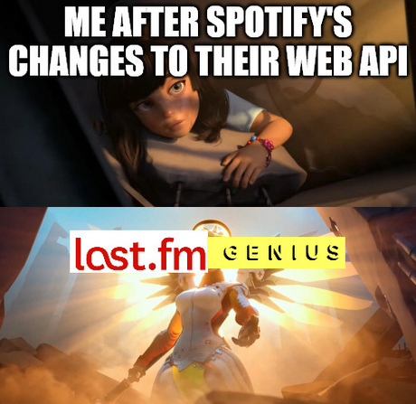
So I decided to pivot on my original project and instead do something related to my favorite artist of all time - Architects.
One look at my top 50 songs and it does not take a genius to figure out that Architects is something that I have been listening to on-repeat since 2018. Ironically enough, I was introduced to their music through Spotify.
But something about their music has always resonated with me. Maybe it is their ‘bleghs’ or their catchy riffs or maybe it is their profound lyrics that have evolved over time. Architects is a band with quite a history. It would be an understatement to say that they were one of the pioneers of the modern metalcore scene.
Needless to say, I was finally able to see them live for the first time in 2024 when they were here in Toronto along with Of Mice & Men and While She Sleeps. Clearly they were as good as I thought they would be. So when they announced their 2025 North American Tour of The Sky, The Earth & All Between, it was a no brainer for me to see them again this year in August.
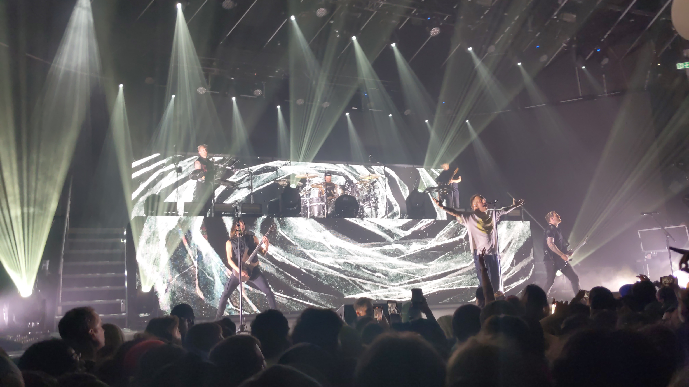
It was one of those concerts where I was 100% locked in from start to finish and till this date one of my greatest experiences. I liked it so much that I lowkey peer pressured my brother to attend their concert in NY. And guess what? He ended up becoming a fan. Mission accomplished.
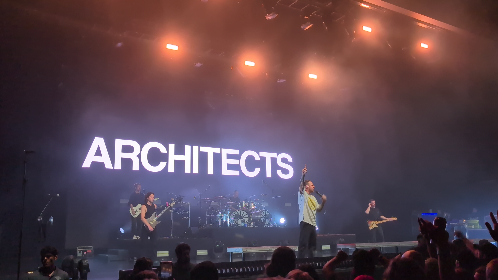
Just like with any other artist that achieves a certain level of fame and commercial success, people start having all sorts of opinions about that. For a band like Architects, that has been touring with big hitters like Linkin Park, it is no different. The traditionalists seem to enjoy the older stuff whereas the new age fans seem to like their modern stuff.
Clearly this has been a topic of contention in online metalcore communities. cough r/metalcore cough.
So it gave me a couple of hypotheses to test:
How has Architects’ popularity evolved over time?
What has been the average sentiment of their albums and how has it evolved over time?
Can we identify any themes by analysing their lyrics?
So let’s jump right in:
How has Architects’ popularity evolved over time?
Quantifying ‘popularity’ is not an easy thing to do. I mean how even would you do that? Sure, you can keep a track of Billboard Rankings, Number of Listeners, Net Worth etc. But they serve as a proxy for measuring popularity. That is until I came across Spotify’s Popularity Index. Naturally, I was curious to know what that meant. I looked around and found this answer by Ximzend on Spotify’s Community Forum:
Copied from API reference pages:
“The artist’s popularity is calculated from the popularity of all the artist’s tracks.” - https://developer.spotify.com/documentation/web-api/reference/get-an-artist
“The popularity is calculated by algorithm and is based, in the most part, on the total number of plays the track has had and how recent those plays are.
Generally speaking, songs that are being played a lot now will have a higher popularity than songs that were played a lot in the past. Duplicate tracks (e.g. the same track from a single and an album) are rated independently. Artist and album popularity is derived mathematically from track popularity. Note: the popularity value may lag actual popularity by a few days: the value is not updated in real time.” - https://developer.spotify.com/documentation/web-api/reference/get-several-tracks
Just like Billboard Rankings and other metrics that I mentioned above, it is not a ‘true’ measure of popularity. Also based on the description, I suspect there will be a recency bias towards the newer albums. But I thought why not give it a go?
import spotipy
from spotipy.oauth2 import SpotifyClientCredentials
import pandas as pd
client_id=''
client_secret='xxxx'
auth_manager = SpotifyClientCredentials(client_id=client_id, client_secret=client_secret)
sp = spotipy.Spotify(auth_manager=auth_manager)
results = sp.search(q='Architects', type='artist', limit=1)
artist_id = results['artists']['items'][0]['id']
albums = sp.artist_albums(artist_id=artist_id, album_type='album', limit=50)
album_popularity = {}
# Calculating the average popularity of Architects' albums
for album in albums['items']:
album_name = album['name']
album_id = album['id']
tracks = sp.album_tracks(album_id)
popularity_scores = []
for track in tracks['items']:
track_info = sp.track(track['id'])
popularity_scores.append(track_info['popularity'])
if popularity_scores:
avg_popularity = sum(popularity_scores) / len(popularity_scores)
album_popularity[album_name] = round(avg_popularity, 2)
df = pd.DataFrame.from_dict(album_popularity, orient='index', columns=['Avg Popularity'])In general, their popularity has trended upwards for the most part.
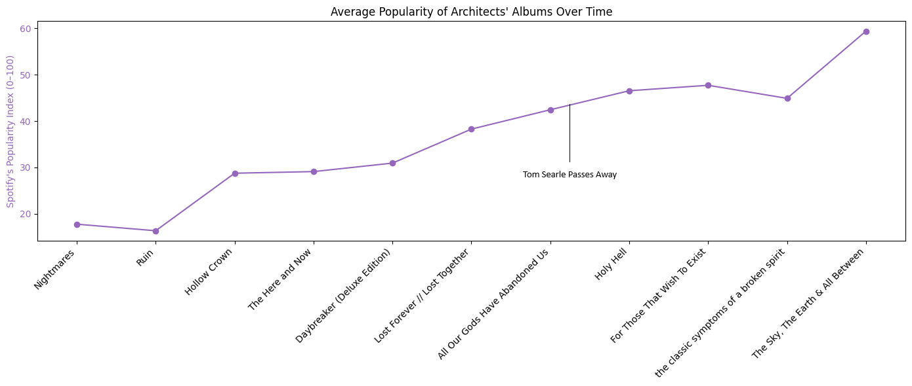
Perhaps one of the most significant events in the band’s history was in 2016 when Tom Searle, the lead guitarist and primary songwriter passed away in 2016 after a long battle with skin cancer. It wasn’t just a huge loss to the band, but the metalcore community as well.
Something else I wanted to look at was the listener count of each of the albums. This is something that Last.Fm’s API provides access to. This metric represents the active listeners who are currently listening to Architects on Last.Fm. Just like Spotify’s Popularity Index, this metric is a snapshot at a point in time and it has certain limitations meaning it’s not capturing the total number of listeners across all platforms like Spotify, Apple Music and Youtube. But I still thought it might serve as a proxy for the band’s popularity over time.
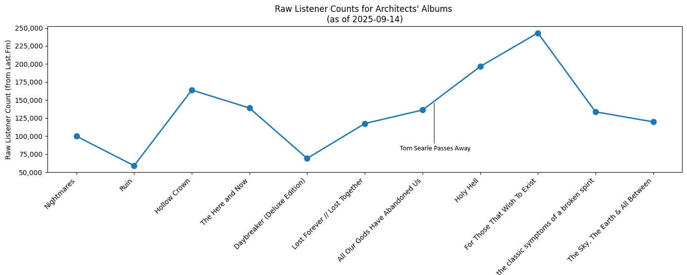
We can see that the listener count started rapidly increasing since All Our Gods Have Abandoned Us until they hit the peak at For Those That Wish To Exist. When it comes to the classic symptoms of a broken spirit, we see a sudden drop in the listener counts. Fans had mixed reactions towards this new direction the band was going with some claiming they had gone commericial and it could partly explain that drop. But if you look at the entire plot, the listener count for this album is on par with some of their older stuff such as Lost Forever // Lost Together. I personally think that if you are a band like Architects who has been producing music for well over 20 years, eventually you’ll encounter the ‘commercial’ accusation.
Finally, here are the two metrics plotted together.
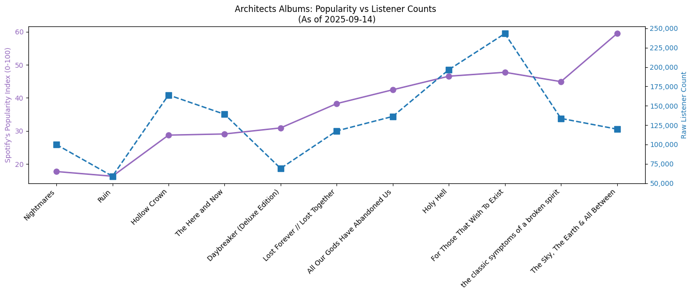
Keeping aside the limitations of these two metrics for a moment, we can see some interesting patterns here. As per Spotify’s Popularity Index, The Sky, The Earth & All Between is one of their most popular records. but it’s not even the most listened record on Last.Fm. Conversely, For Those That Wish To Exist has the highest listener count according to Last.Fm, but it’s popularity index is around 50. When I think about it, Animals is their most watched video on Youtube with around 35 million views.
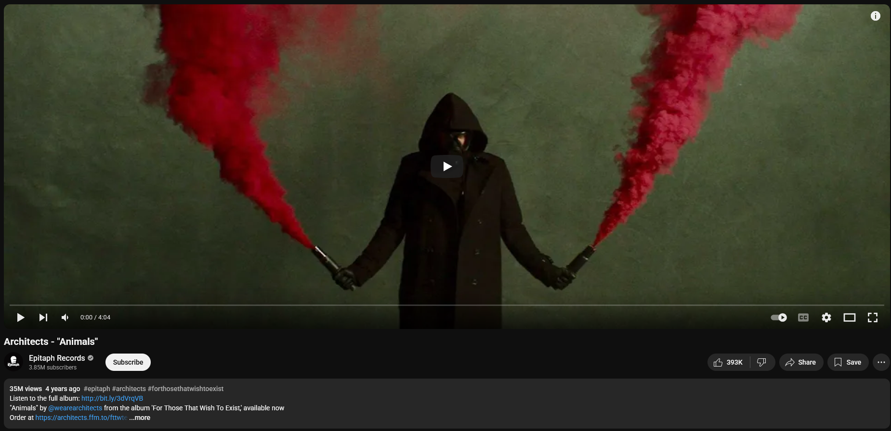
On Spotify, it is their most popular track with around 140 million listeners at the time of this writing.
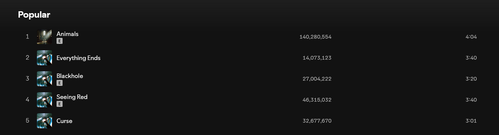
In conclusion, looking at these two metrics tells us a little bit about their evolution as a band. But just like all things in life, there is more than meets the eye.
What has been the average sentiment of their albums and how has it evolved over time?
Just like Raphael did for Cannibal Corpse’s discography, I wanted to quantify the ‘heaviness’ of Architects’ songs. But that ship had sailed. So I had to come up with something new. Then I thought why not do something with their lyrics? Maybe analyse the average sentiment of their albums over time?
As a first step, I downloaded the lyrics of all their records using Genius API. The only limitation I encountered was that Genius did not have lyrics for their first album Nightmares. To calculate the average sentiment acorss the different albums, I decided to use VADER (Valence Aware Dictionariy and sEntiment Reasoner). It is a lexicon and rule-based sentiment analysis tool that is used for analysing sentiments in social media. But before I could do that, I had to clean the lyrics, and get rid of stopwords and punctuation.
import json
import lyricsgenius
from nltk.sentiment.vader import SentimentIntensityAnalyzer
import nltk
import re
import string
from collections import defaultdict
from nltk.corpus import stopwords
from nltk.tokenize import word_tokenize
import nltk
GENIUS_ACCESS_TOKEN = 'xxxxxx'
# Authenticate Genius
genius_lyrics = lyricsgenius.Genius(GENIUS_ACCESS_TOKEN, timeout=10, retries=3)
genius_lyrics.excluded_terms = ["(Remix)", "(Live)"]
albums = [
"Nightmares", "Ruin", "Hollow Crown", "The Here and Now", "Daybreaker",
"Lost Forever // Lost Together", "All Our Gods Have Abandoned Us",
"Holy Hell", "For Those That Wish to Exist",
"The Classic Symptoms of a Broken Spirit",
"The Sky, the Earth & All Between"
]
def get_album_id(artist_name, album_name):
results = spotify.search(q=f"album:{album_name} artist:{artist_name}", type="album", limit=1)
items = results['albums']['items']
return items[0]['id'] if items else None
def get_album_tracks(album_id):
results = spotify.album_tracks(album_id)
return [track['name'] for track in results['items']]
def get_lyrics(artist, track):
try:
song = genius.search_song(track, artist)
return song.lyrics if song else None
except:
return None
def main():
data = {}
for album in albums:
print(f"\Album: {album}")
album_id = get_album_id("Architects", album)
if not album_id:
print(" Not found on Spotify.")
continue
tracks = get_album_tracks(album_id)
data[album] = {}
for track in tracks:
print(f" {track}")
lyrics = get_lyrics("Architects", track)
if lyrics:
data[album][track] = lyrics
else:
print(" Lyrics not found.")
with open("lyrics.json", "w", encoding="utf-8") as f:
json.dump(data, f, indent=2, ensure_ascii=False)
print("\nLyrics saved to 'lyrics.json'.")
if __name__ == "__main__":
main()
nltk.download('punkt')
nltk.download('stopwords')
with open("lyrics.json", "r", encoding="utf-8") as f:
data = json.load(f)
stop_words = set(stopwords.words('english'))
punctuation = set(string.punctuation)
# cleaning the lyrics
def clean_text(text):
text = re.sub(r'\[.*?\]', '', text)
text = text.lower()
text = re.sub(r'\n', ' ', text)
text = re.sub(r'[^a-z\s]', '', text)
tokens = word_tokenize(text)
tokens = [word for word in tokens if word not in stop_words and len(word) > 2]
return tokens
cleaned_lyrics = defaultdict(list)
for album, tracks in data.items():
for song, lyrics in tracks.items():
tokens = clean_text(lyrics)
cleaned_lyrics[album].extend(tokens)
To calculate the average sentiment score, I went with a very basic approach of first calculating the sentiment for all the songs in an album and then calculating an average.
nltk.download('vader_lexicon')
with open("lyrics.json", "r", encoding="utf-8") as f:
data = json.load(f)
sid = SentimentIntensityAnalyzer()
album_sentiments = {}
for album, tracks in data.items():
sentiments = []
for track, lyrics in tracks.items():
if lyrics:
scores = sid.polarity_scores(lyrics)
sentiments.append(scores['compound'])
if sentiments:
avg_sentiment = sum(sentiments) / len(sentiments)
else:
avg_sentiment = 0
album_sentiments[album] = avg_sentiment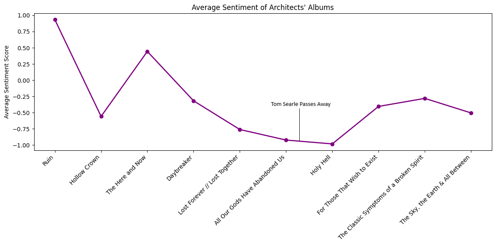
This one did not surprise me and you’ll see why shortly.
Here is the plot of their popularity vs the average sentiment scores of their albums.
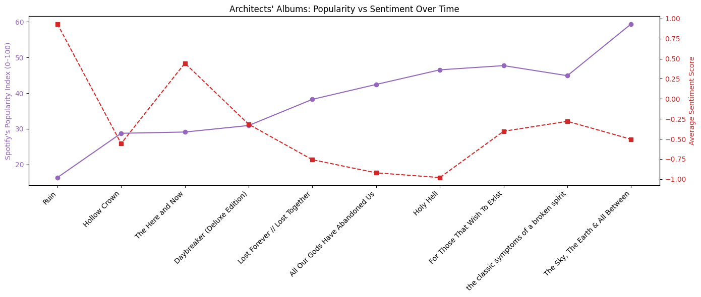
Unlike their popularity index, the average sentiment scores have trended downwards. Let’s look at how their average sentiment scores along with the listener count:
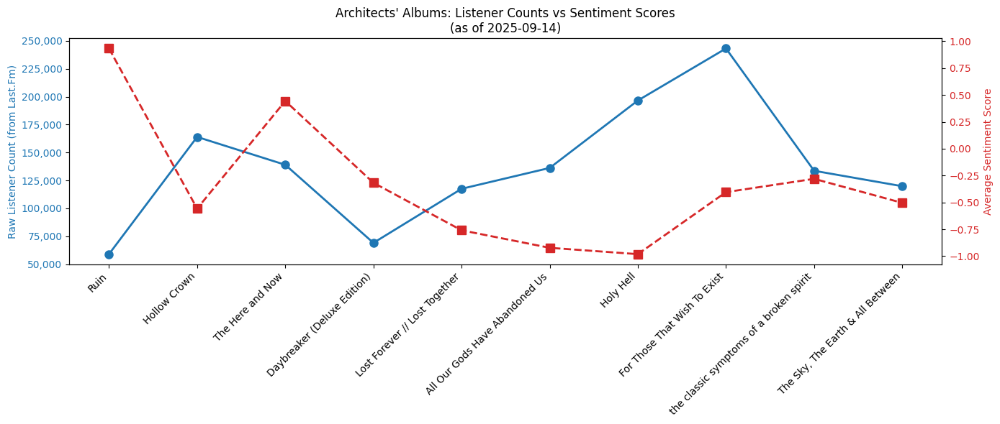
One could say that there is somewhat of an inverse correlation between the sentiment scores and their listener count, especially if you look at the trend between Lost Forever // Lost Together to For Those That Wish To Exist . Again the key word is somewhat.
So can we conclude that the data definitively proves that their ‘heavier stuff’ is behind their success? I don’t think so. We are just looking at lyrics. This analysis does not factor in their musical style, their riffs and possibly a hundred other confounding variables that have made them who they are.
While I was analysing lyrics, I knew it would be a missed opportunity if I didn’t look at the frequency of the signature Architects’ BLEGH!™ across their albums. So I had to do it and here we are:
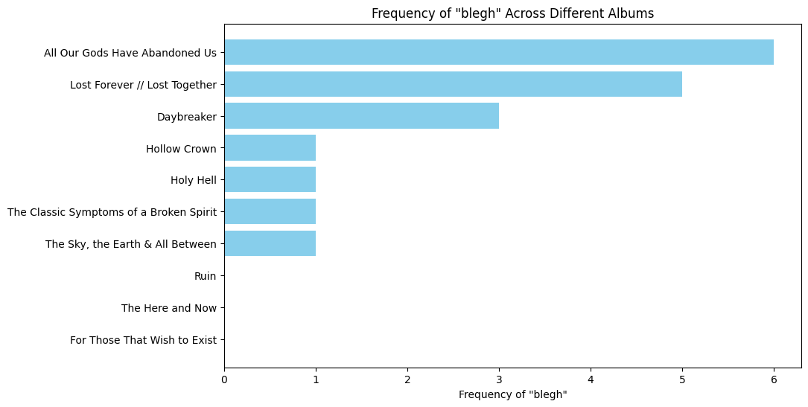
Alright folks, that’s a wrap! Case closed. The data clearly shows All Our Gods Have Abandoned Us is the the greatest metalcore albums of all time.
Jokes aside, I knew there was one more thing left for me to do.
Can we identify any themes by analysing their lyrics?
It was time for the good ol’ reliable…
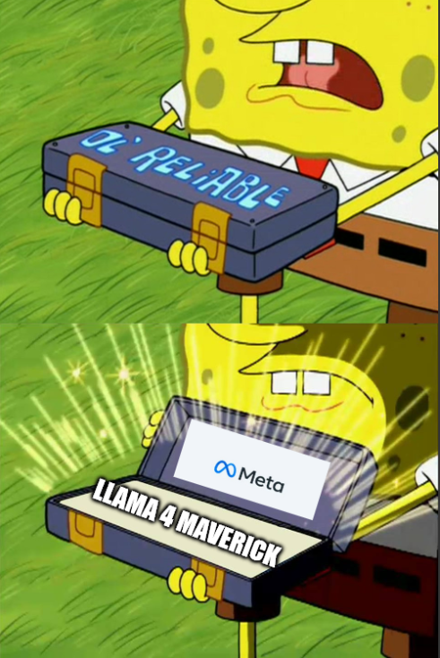
Since I had all the lyrics in front of me, I said why not run it through a LLM, let it do the analysis and see what it has to say. I decided to use Llama 4 Maverick .
from openai import OpenAI
client = OpenAI(
base_url="https://openrouter.ai/api/v1",
api_key="sk-XXXXXX",
)
def album_themes(album_name, combined_lyrics):
prompt = [
{
"type": "text",
"text": (
f"You are a music analyst. Summarize the main themes, emotions, and stories explored "
f"in the album '{album_name}' by analyzing the following lyrics. "
"Provide a concise paragraph highlighting the key topics and tone of the album.\n\n"
f"Lyrics:\n{combined_lyrics[:4000]}" # truncate for token limit
)
}
]
completion = client.chat.completions.create(
model="meta-llama/llama-4-maverick:free",
messages=[
{
"role": "user",
"content": prompt
}
]
)
return completion.choices[0].message.content.strip()
album_summaries = {}
for album, songs in data.items():
combined_lyrics = "\n\n".join(songs.values())
summary = album_themes(album, combined_lyrics)
album_summaries[album] = summary
with open("album_summaries.json", "w", encoding="utf-8") as f:
json.dump(album_summaries, f, indent=2, ensure_ascii=False)
def album_themes(album_summaries):
summary_text = "\n\n".join([f"{album}:\n{summary}" for album, summary in album_summaries.items()])
prompt = [
{
"type": "text",
"text": (
"You are a music critic who analyzes the evolution of a band's themes and styles over time. "
"Below are summaries of albums of a band in chronological order:\n\n"
f"{combined_summary_text}\n\n"
"Please write a detailed comparison describing how the themes, tone, and lyrical style evolved "
"across these albums. Highlight any noticeable changes or recurring motifs."
)
}
]
completion = client.chat.completions.create(
model="meta-llama/llama-4-maverick:free",
messages=[
{
"role": "user",
"content": prompt
}
]
)
return completion.choices[0].message.content.strip()
comparison = album_themes(album_summaries)And this is what the Llama had to say
Evolution of Themes Across Albums
The discography of Architects presents a complex and thought-provoking exploration of the human condition, with themes, tone, and lyrical style evolving significantly across their albums. From the early “Ruin” to the latest “The Sky, the Earth & All Between,” the band has navigated a diverse range of emotions, ideas, and experiences, reflecting the turmoil and introspection that often characterizes their music.
One of the most striking aspects of Architects’ evolution is their consistent exploration of themes related to disillusionment, frustration, and existential crisis. Albums like “Hollow Crown,” “The Here and Now,” “Daybreaker,” and “Lost Forever // Lost Together” all grapple with the darkness and despair that can accompany feelings of disconnection and hopelessness. These themes are often linked to critiques of societal ills, such as corruption, oppression, and the erosion of empathy and unity. The band’s lyrics frequently express outrage, anger, and desperation, reflecting their concern with the state of the world and humanity’s role in shaping it.
Over time, however, the band’s tone has shifted from one of intense anguish and despair to a more nuanced and introspective exploration of the human condition. Albums like “All Our Gods Have Abandoned Us” and “For Those That Wish to Exist” still convey a sense of desperation and frustration, but they also introduce a more explicit sense of resignation and hopelessness. The tone becomes increasingly dark and fatalistic, with the band lamenting the destructive nature of humanity and the collapse of societal values.
In contrast, “Holy Hell” marks a significant departure from this trend, as the band explores themes of mortality, loss, and acceptance in a more contemplative and introspective manner. The album’s tone is melancholic and reflective, with the narrator grappling with the inevitability of death and the transience of human existence. This shift towards a more somber and accepting tone is notable, as it suggests a growing awareness of the complexities and mysteries of life and death.
The band’s most recent albums, including “The Classic Symptoms of a Broken Spirit” and “The Sky, the Earth & All Between,” continue this trend towards introspection and self-discovery. While still critiquing societal ills and expressing frustration and outrage, the band’s tone has become more intense and unapologetic, with a greater emphasis on resilience, rebellion, and individuality. The lyrics reveal a narrative of overcoming adversity and rising above the negativity and toxicity of others, with the speaker refusing to be held back by pain and trauma.
Throughout their discography, Architects have employed a range of lyrical styles, from the surreal and absurd metaphors of “Ruin” to the more direct and scathing critiques of societal ills in later albums. The band’s use of imagery and symbolism has remained a consistent feature of their work, with vivid and often unsettling pictures of a world in crisis or collapse. The repetition of certain phrases and refrains, such as “we’re still holding on for dear life” or “we all fall in parallel,” has become a hallmark of their style, underscoring the sense of desperation and frustration that pervades much of their music.
Despite the many changes and evolutions in their style and themes, certain motifs have recurred throughout Architects’ discography. The struggle for individuality and authenticity in the face of societal pressure and conformity is a persistent concern, as is the critique of institutionalized faith and the search for meaning in a seemingly indifferent or hostile universe. The band’s exploration of mortality, loss, and the human condition has become increasingly nuanced and complex, reflecting their ongoing grappling with the complexities and mysteries of existence.
In conclusion, Architects’ discography presents a complex and thought-provoking exploration of the human condition, with themes, tone, and lyrical style evolving significantly across their albums. While certain motifs have recurred throughout their work, the band’s willingness to experiment and challenge themselves has resulted in a diverse and often provocative body of work.
That just sums it up. All Our Gods Have Abandoned Us is regarded as one of the greatest metalcore albums of all time and I 100% agree with that. I found out about this album and the backstory long after Tom Searle’s death in 2016. He was diagnosed with Stage 4 melanoma and he went into this album knowing this was going to be his last. Clearly it is an album of Tom coming to grips with his imminent demise. Perhaps that is why it has deeply touched me and millions of other folks because it is such an emotional piece of art. Holy Hell was about grief, accepting what’s left behind and moving forwards. I, for one, really enjoyed their latest record The Sky, The Earth & All Between. I like the industrial/synthcore direction that they are going in. It can be very largerly attributed to the fact that Jordan Fish was heavily involved in the production of this record and I am sure Tom would be proud of it as well.
In conclusion, Architects will always be near and dear to my heart and Tom still inspires me even today, not just to write better riffs but to be a better person. Architects is on my ‘Mt. Rushmore’ of artists along with Linkin Park and Avenged Sevenfold (I still can’t decide who will be occupy the fourth spot).
So I guess Keep Calm and Metal On? Or given that it’s Architects, Keep Calm and Blegh On?